Soru 1Cevap: E
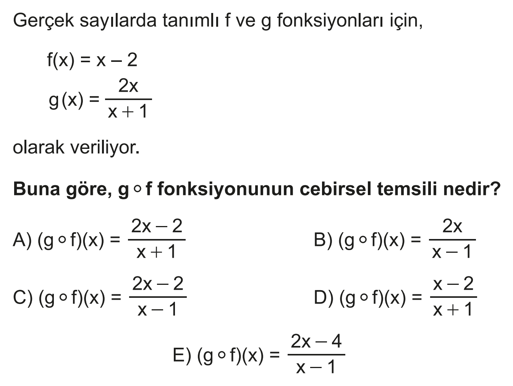
Çözüm
- $(g\circ f)(x)=\dfrac{2f(x)}{f(x)+1}$.
- $=\dfrac{2(x-2)}{x-2+1}$.
- $=\dfrac{2x-4}{x-1}$ (E).
Cevap: E
Soru 2Cevap: E
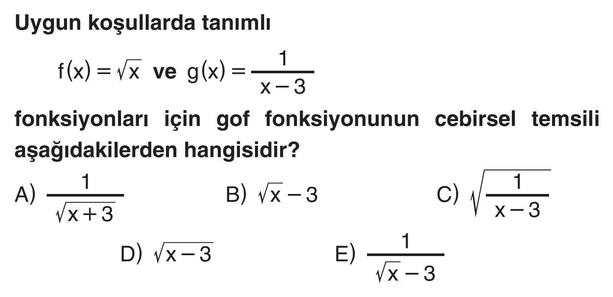
Çözüm
- $(g\circ f)(x)=g(\sqrt x)$.
- $=\dfrac{1}{\sqrt x-3}$.
- Cevap E.
Cevap: E
Soru 3Cevap: A
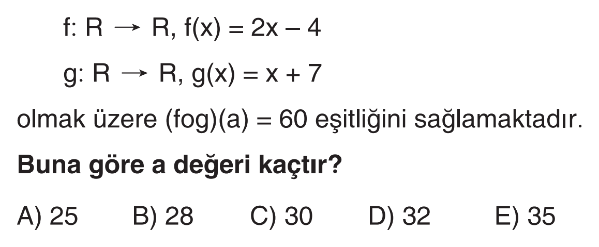
Çözüm
- $(f\circ g)(a)=2(a+7)-4$.
- $2a+10=60$.
- $a=25$ (A).
Cevap: A
Soru 4Cevap: D
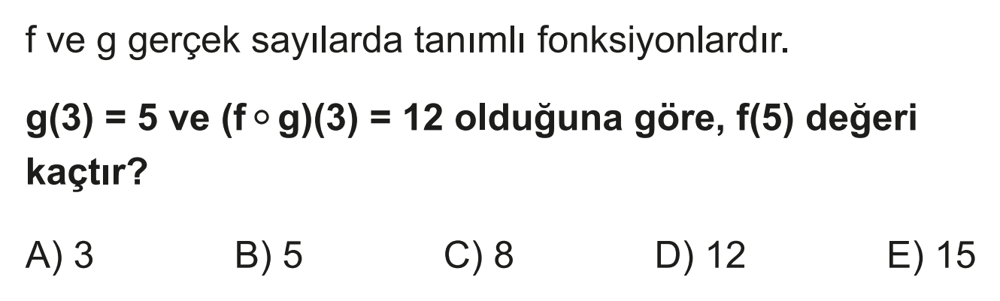
Çözüm
- $(f\circ g)(3)=f(g(3))$.
- $g(3)=5$ olduğundan $f(5)=(f\circ g)(3)$.
- $f(5)=12$ (D).
Cevap: D
Soru 5Cevap: B
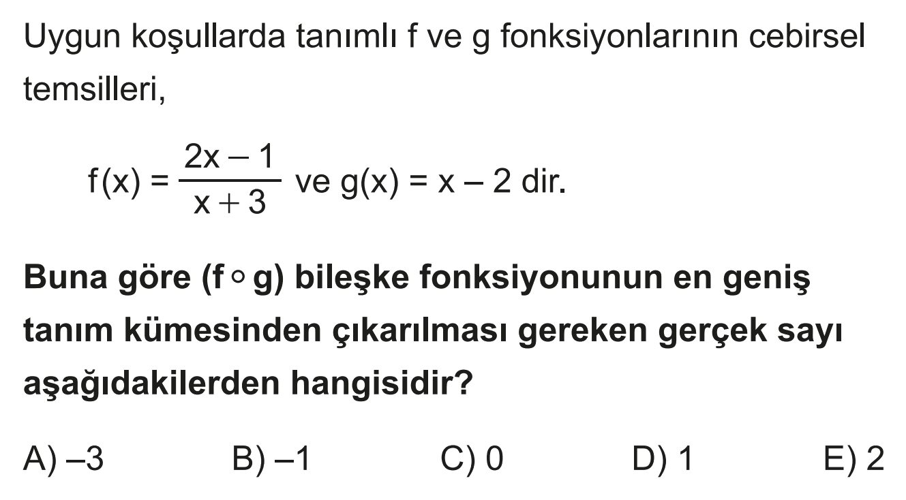
Çözüm
- $(f\circ g)(x)=\dfrac{2(x-2)-1}{(x-2)+3}=\dfrac{2x-5}{x+1}$.
- Payda: $x+1\ne0$.
- Çıkarılması gereken değer $-1$ (B).
Cevap: B
Soru 6Cevap: B
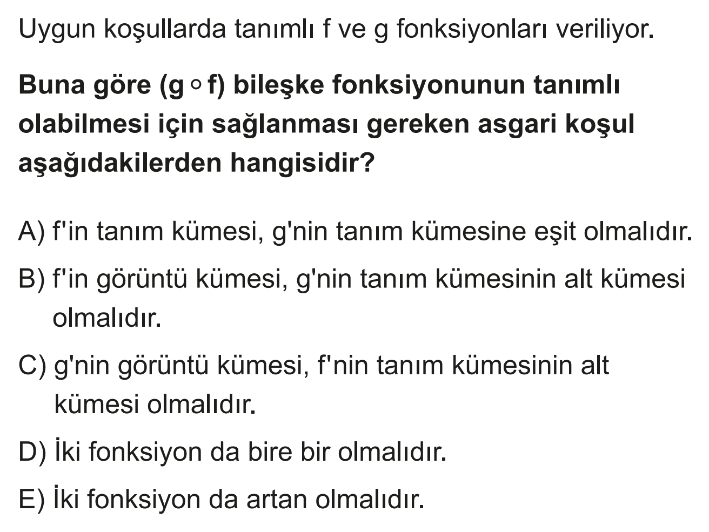
Çözüm
- $g\circ f$'de önce $f$, sonra $g$ uygulanır.
- $f(x)$ değerlerinin $g$'nin tanım kümesinde olması gerekir.
- $f$'nin görüntü kümesi $g$'nin tanım kümesinin alt kümesi olmalı (B).
Cevap: B
Soru 7Cevap: E
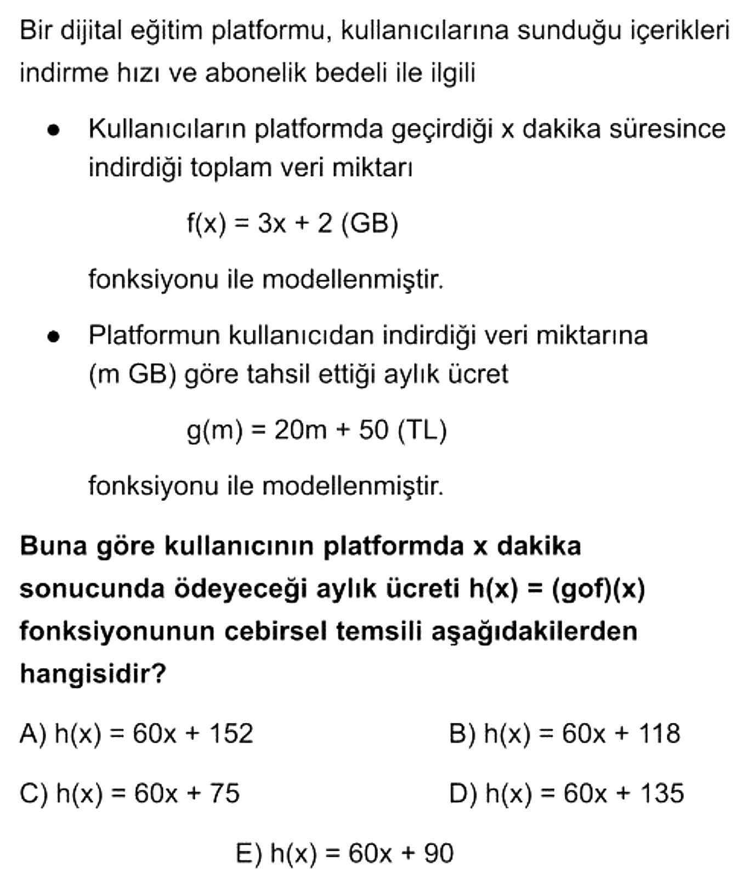
Çözüm
- $h(x)=g(f(x))=20(3x+2)+50$.
- $=60x+40+50$.
- $=60x+90$ (E).
Cevap: E
Soru 8Cevap: C
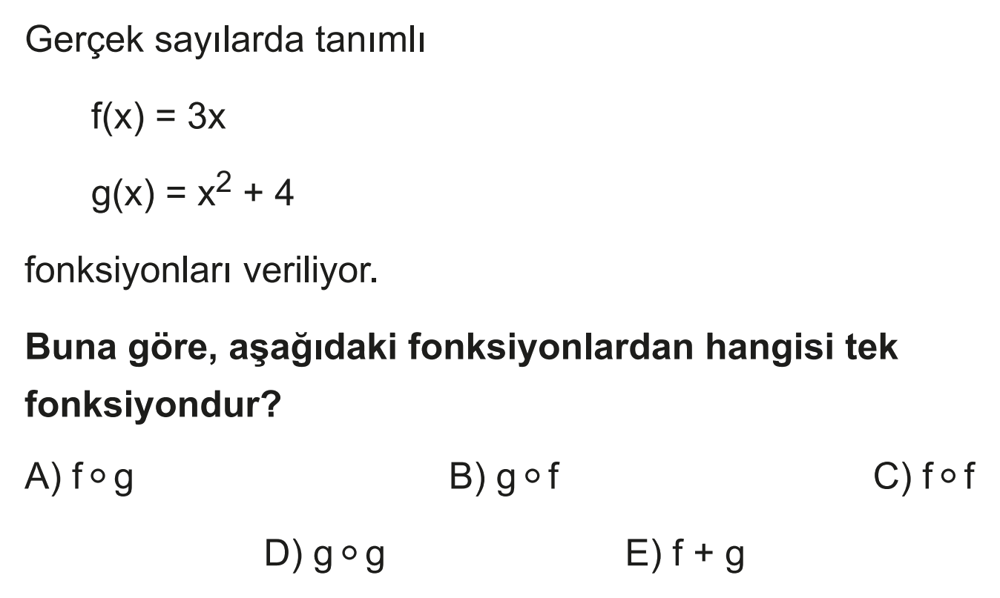
Çözüm
- $f(x)=3x$ tek, $g(x)=x^2+4$ çift fonksiyondur.
- İçte çift fonksiyon olan bileşkeler ($f\circ g$, $g\circ g$) ve $g\circ f$ çifttir.
- $(f\circ f)(x)=9x$ tektir (C).
Cevap: C
Soru 9Cevap: B
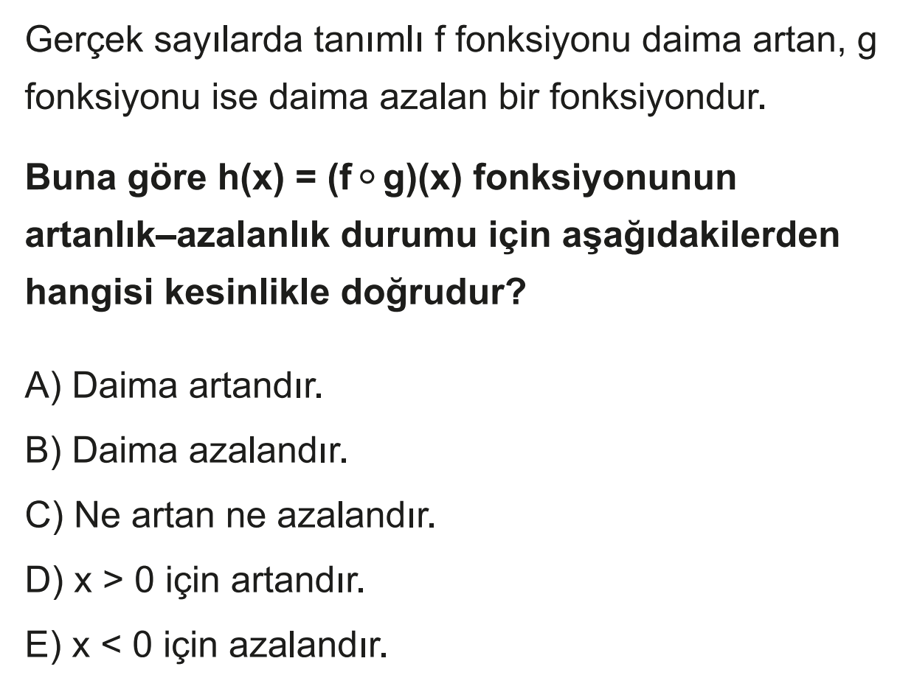
Çözüm
- $h=f\circ g$: dıştaki $f$ artan, içteki $g$ azalan.
- Zıt karakterli fonksiyonların bileşkesi azalandır.
- $h$ daima azalandır (B).
Cevap: B
Soru 10Cevap: C
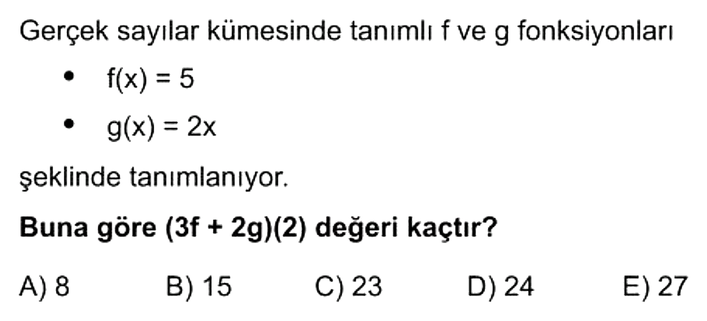
Çözüm
- $3f(2)=15$.
- $2g(2)=8$.
- $15+8=23$ (C).
Cevap: C
Soru 11Cevap: B
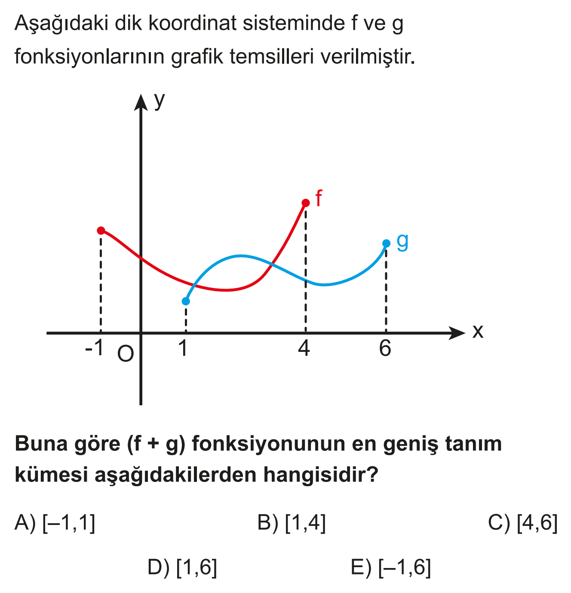
Çözüm
- Grafikten $f$'nin tanım kümesi $[-1,4]$.
- $g$'nin tanım kümesi $[1,6]$.
- $f+g$: kesişim $[1,4]$ (B).
Cevap: B
Soru 12Cevap: B
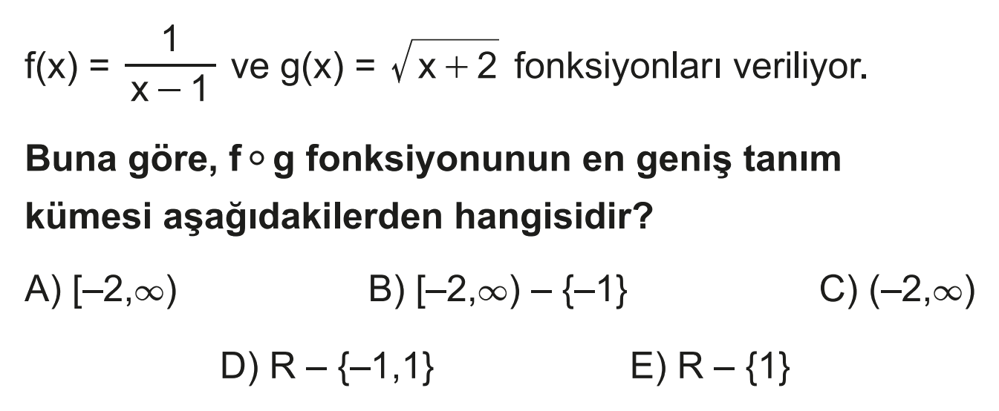
Çözüm
- $(f\circ g)(x)=\dfrac{1}{\sqrt{x+2}-1}$.
- Kök için $x\ge-2$; payda için $\sqrt{x+2}\ne1\Rightarrow x\ne-1$.
- Tanım kümesi $[-2,\infty)-\{-1\}$ (B).
Cevap: B
Soru 13Cevap: A
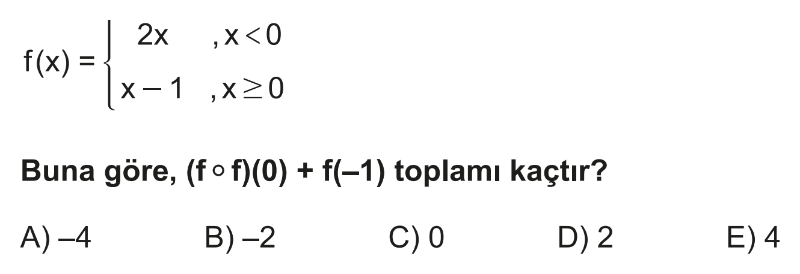
Çözüm
- $0\ge0$: $f(0)=-1$; $-1\lt0$: $f(-1)=-2$. $(f\circ f)(0)=-2$.
- $f(-1)=-2$.
- Toplam $-4$ (A).
Cevap: A
Soru 14Cevap: A
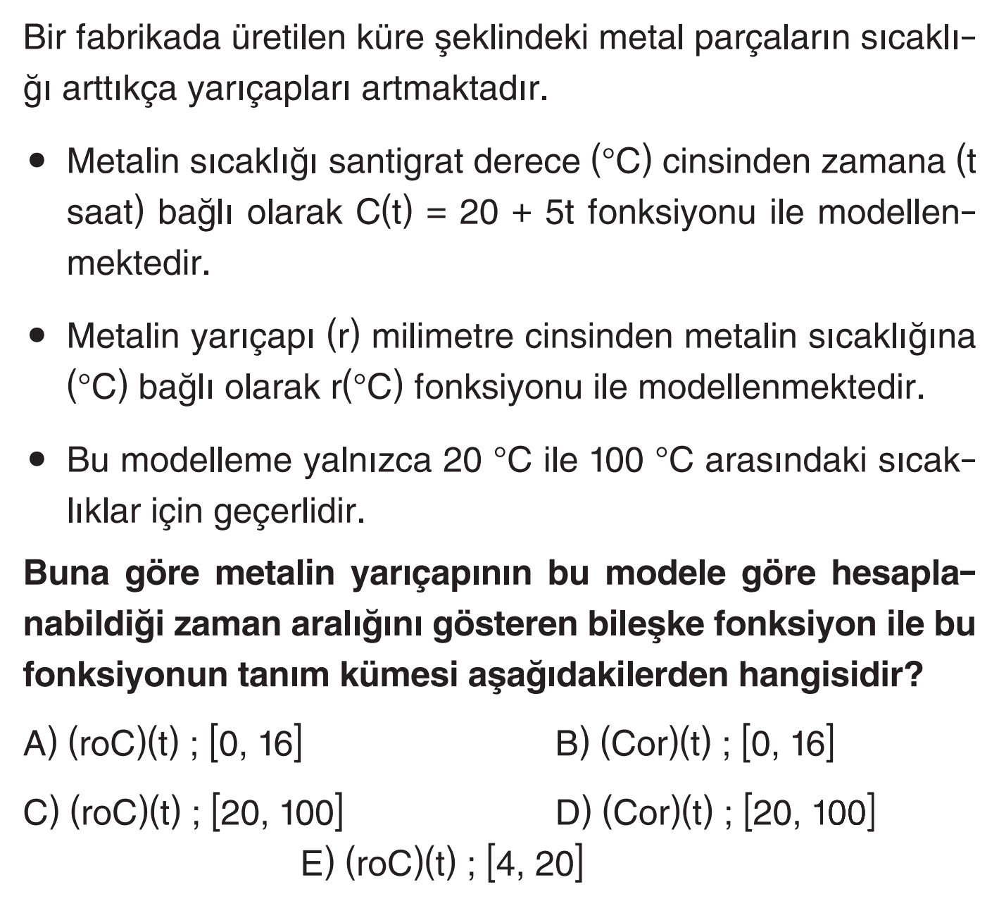
Çözüm
- Yarıçap zamana bağlı: $(r\circ C)(t)$.
- Model $20\le C(t)\le100$ için geçerli: $20\le20+5t\le100$.
- $0\le t\le16$: $(r\circ C)(t)$; $[0,16]$ (A).
Cevap: A
Soru 15Cevap: D
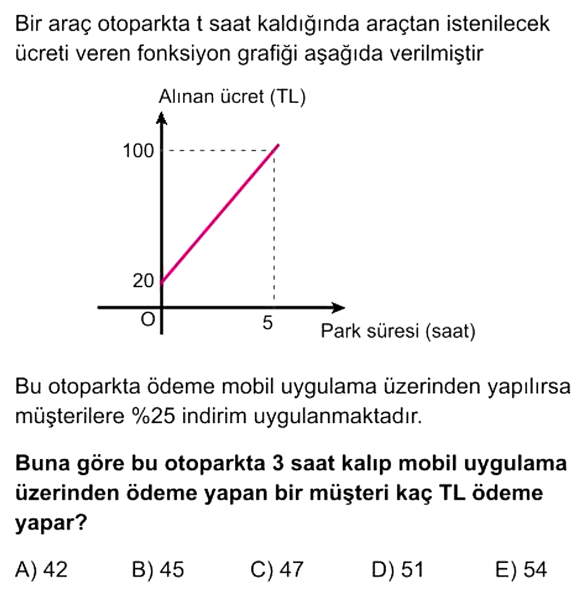
Çözüm
- Grafik $(0,20)$ ve $(5,100)$'den geçer: $f(t)=16t+20$.
- $f(3)=68$ TL.
- $\%25$ indirimle $0{,}75\cdot68=51$ TL (D).
Cevap: D
Soru 16Cevap: C
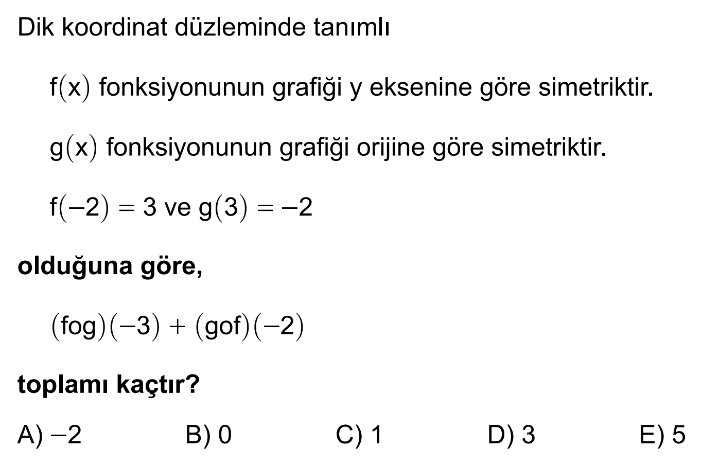
Çözüm
- $g$ tek: $g(-3)=-g(3)=2$; $f$ çift: $f(2)=f(-2)=3$. $(f\circ g)(-3)=3$.
- $f(-2)=3$, $(g\circ f)(-2)=g(3)=-2$.
- Toplam $3+(-2)=1$ (C).
Cevap: C
Soru 17Cevap: D
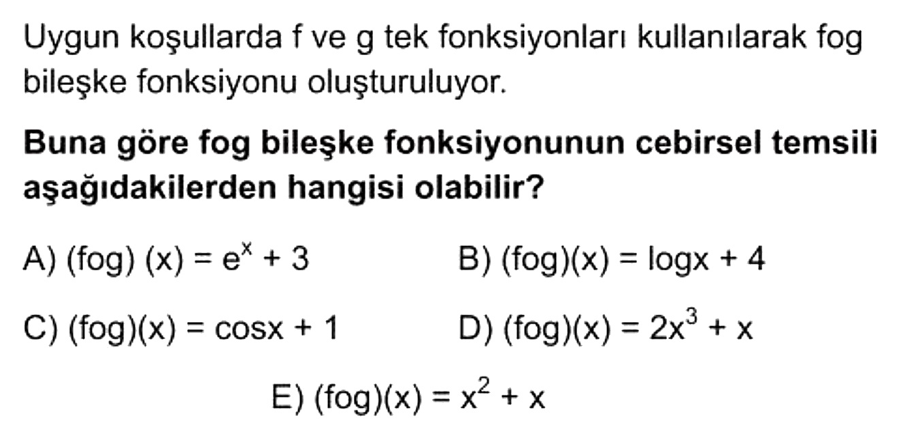
Çözüm
- Tek fonksiyonların bileşkesi tektir.
- $e^x+3$, $\log x+4$, $\cos x+1$, $x^2+x$ tek değildir.
- $2x^3+x$: $x$ yerine $-x$ yazılınca işaret değişir, tektir (D).
Cevap: D
Soru 18Cevap: D
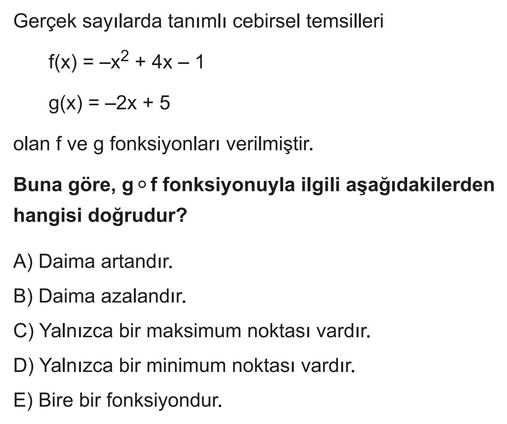
Çözüm
- $f(x)=-(x-2)^2+3$: yalnızca maksimumu vardır.
- $g$ azalan olduğundan $g\circ f$'de maksimum minimuma döner.
- $g\circ f$'nin yalnızca bir minimum noktası vardır (D).
Cevap: D
Soru 19Cevap: C
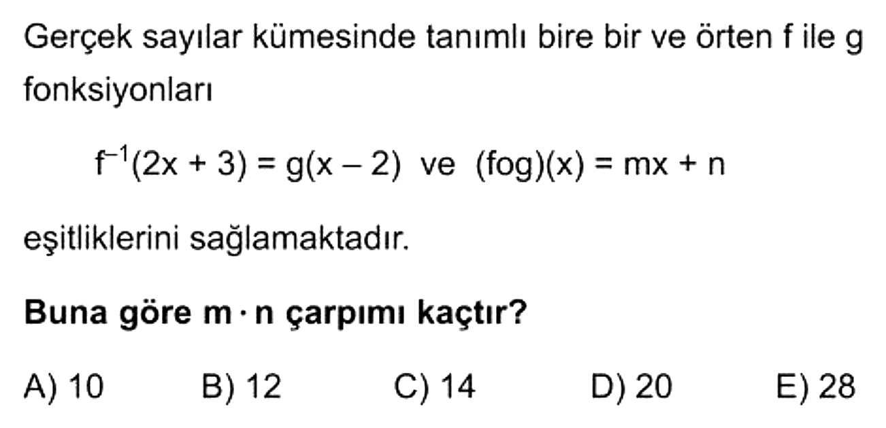
A)$10$B)$12$C)$14$D)$20$E)$28$
Çözüm
- $2x+3=f(g(x-2))$.
- $x-2=t$: $(f\circ g)(t)=2t+7$.
- $m\cdot n=14$ (C).
Cevap: C
Soru 20Cevap: D
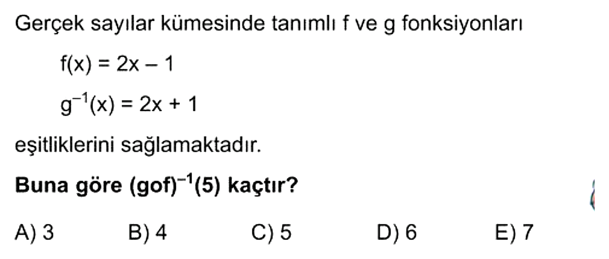
A)$3$B)$4$C)$5$D)$6$E)$7$
Çözüm
- $g^{-1}(x)=2x+1\Rightarrow g(x)=\dfrac{x-1}{2}$.
- $(g\circ f)(x)=\dfrac{2x-1-1}{2}=x-1$.
- $(g\circ f)^{-1}(5)=6$ (D).
Cevap: D
Soru 21Cevap: E
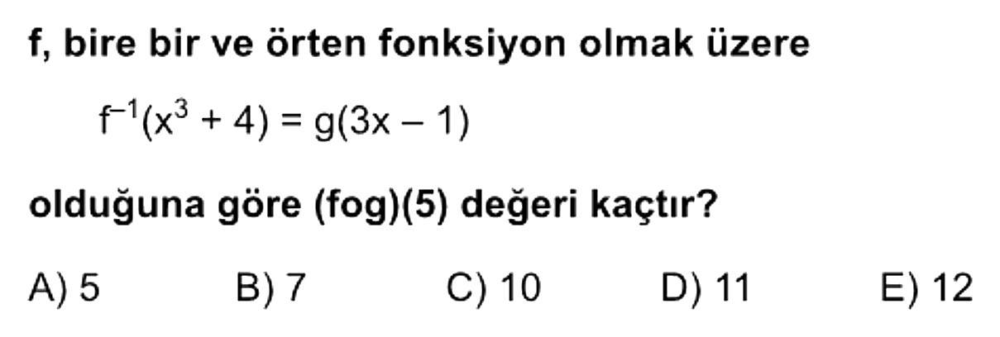
Çözüm
- $f^{-1}(x^3+4)=g(3x-1)\Rightarrow f(g(3x-1))=x^3+4$.
- $3x-1=5\Rightarrow x=2$.
- $(f\circ g)(5)=12$ (E).
Cevap: E
Soru 22Cevap: E
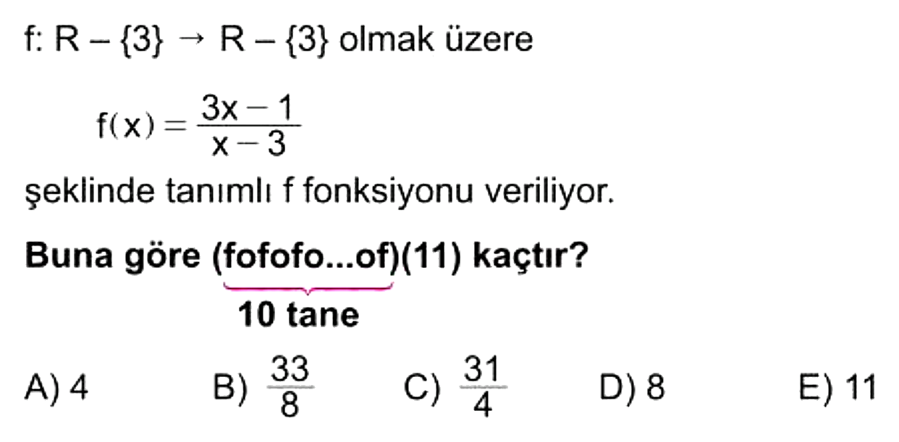
Çözüm
- $f(x)=\dfrac{3x-1}{x-3}$ için pay katsayısı $3$, paydadaki sabit $-3$: $f=f^{-1}$, yani $f\circ f=I$.
- $10$ tane $f$, $5$ tane $f\circ f$ demektir.
- Sonuç $11$ (E).
Cevap: E
Soru 23Cevap: E
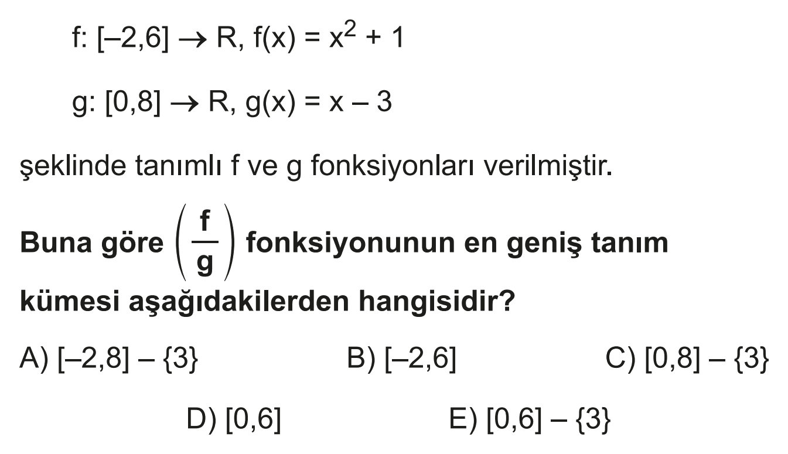
Çözüm
- Ortak tanım kümesi $[-2,6]\cap[0,8]=[0,6]$.
- Payda sıfır olamaz: $g(x)=x-3=0\Rightarrow x=3$ çıkarılır.
- En geniş tanım kümesi $[0,6]-\{3\}$ (E).
Cevap: E
Soru 24Cevap: C
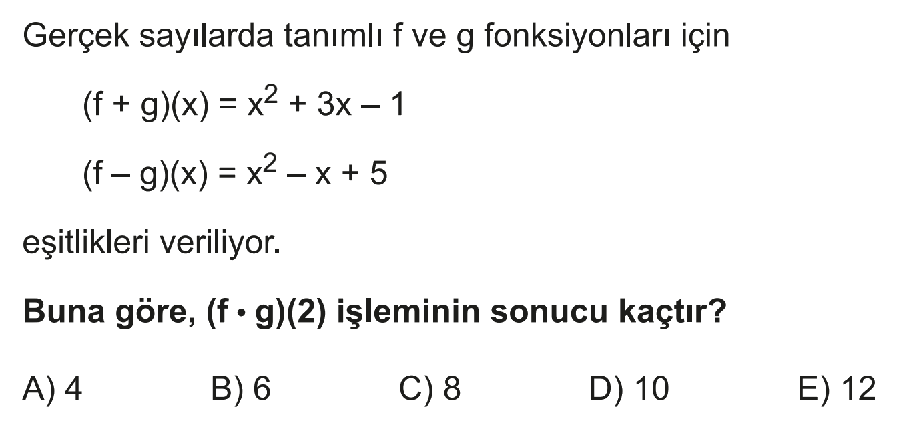
Çözüm
- $(f+g)(2)=4+6-1=9$, $(f-g)(2)=4-2+5=7$.
- Toplanırsa $2f(2)=16\Rightarrow f(2)=8$, $g(2)=1$.
- $(f\cdot g)(2)=8$ (C).
Cevap: C
Soru 25Cevap: D
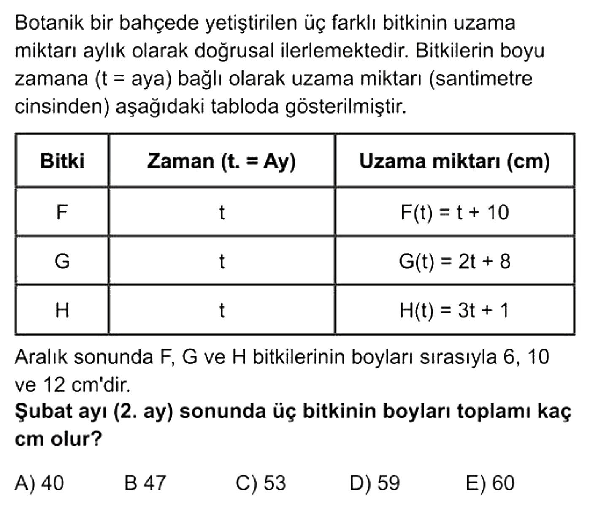
Çözüm
- $t=2$: F $6+12=18$, G $10+12=22$.
- H $12+7=19$.
- Toplam $59$ cm (D).
Cevap: D
Soru 26Cevap: D
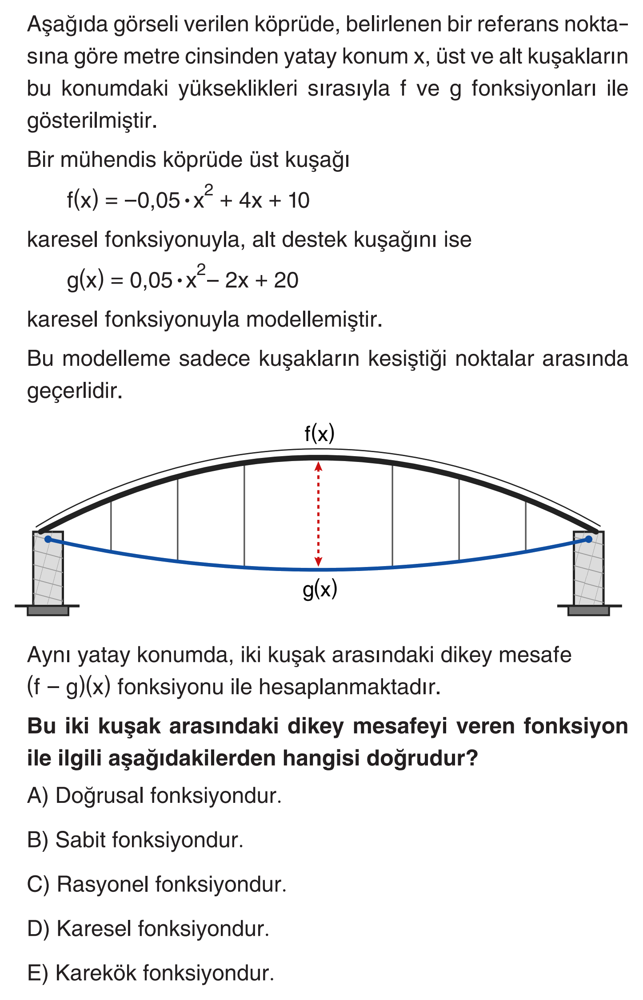
Çözüm
- $(f-g)(x)=(-0{,}05x^2+4x+10)-(0{,}05x^2-2x+20)$.
- $=-0{,}1x^2+6x-10$.
- İkinci dereceden: karesel fonksiyon (D).
Cevap: D
Soru 27Cevap: C
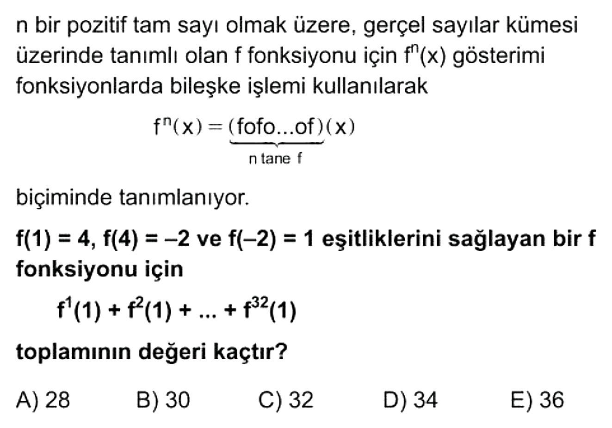
Çözüm
- $f^1(1)=4$, $f^2(1)=f(4)=-2$, $f^3(1)=f(-2)=1$: değerler $4,-2,1$ diye üçlü tekrar eder (toplam $3$).
- $32=3\cdot10+2$: ilk $30$ terimin toplamı $30$.
- Kalan $f^{31}(1)+f^{32}(1)=4+(-2)$; toplam $32$ (C).
Cevap: C
Soru 28Cevap: C
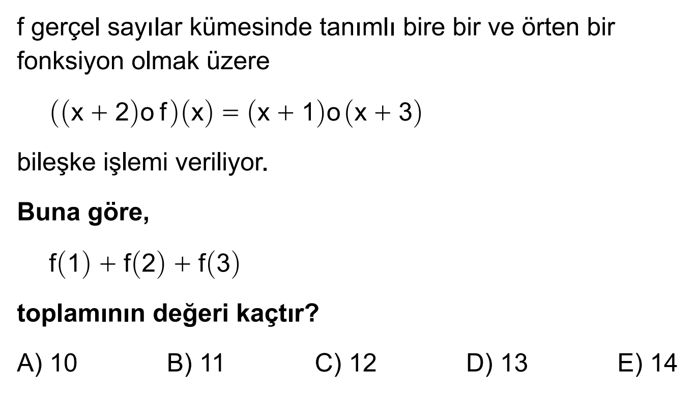
Çözüm
- Sol taraf $f(x)+2$, sağ taraf $(x+3)+1=x+4$.
- $f(x)+2=x+4\Rightarrow f(x)=x+2$.
- $f(1)+f(2)+f(3)=3+4+5=12$ (C).
Cevap: C
Soru 29Cevap: B
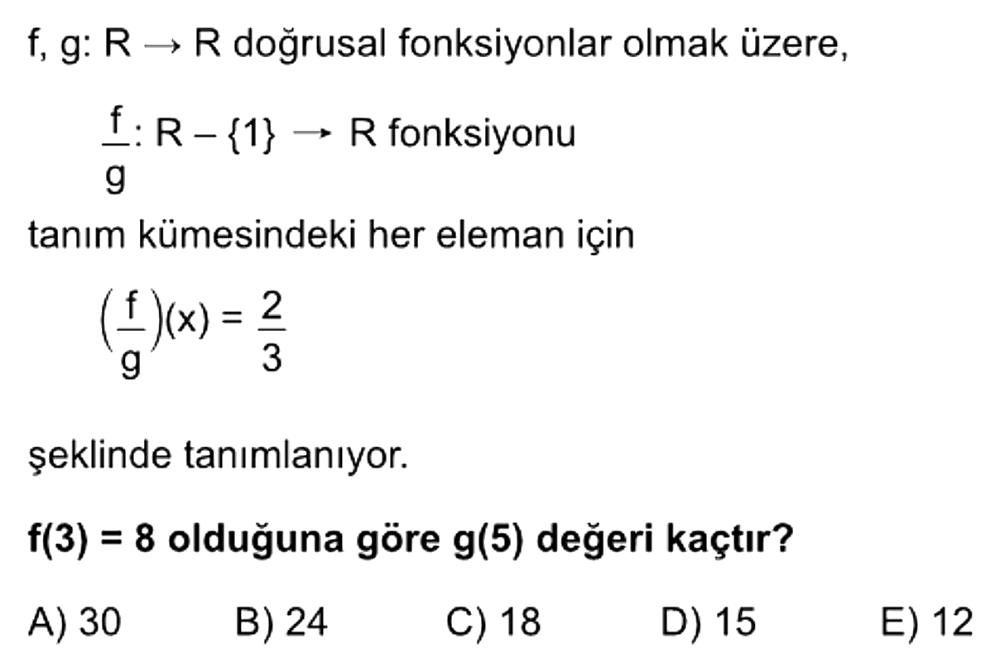
Çözüm
- $\dfrac fg$'nin tanım kümesi $\mathbb R-\{1\}$: $g(1)=0$; $f=\dfrac23g$ olduğundan $f(1)=0$.
- $f(x)=k(x-1)$, $f(3)=2k=8\Rightarrow k=4$; $f(5)=16$.
- $g(5)=\dfrac32\cdot16=24$ (B).
Cevap: B
Soru 30Cevap: E
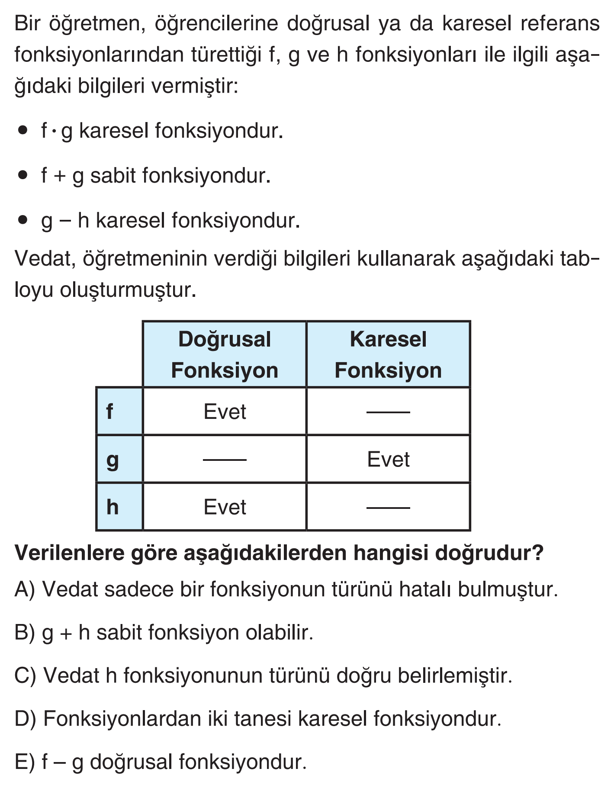
Çözüm
- $f\cdot g$ karesel ve $f+g$ sabit: $f$ ve $g$ eğimleri zıt doğrusal fonksiyonlar.
- $g$ doğrusal iken $g-h$ karesel: $h$ karesel. Vedat iki fonksiyonda yanılmış.
- $f$, $g$ zıt eğimli olduğundan $f-g$'nin eğimi sıfırdan farklı: doğrusal (E).
Cevap: E